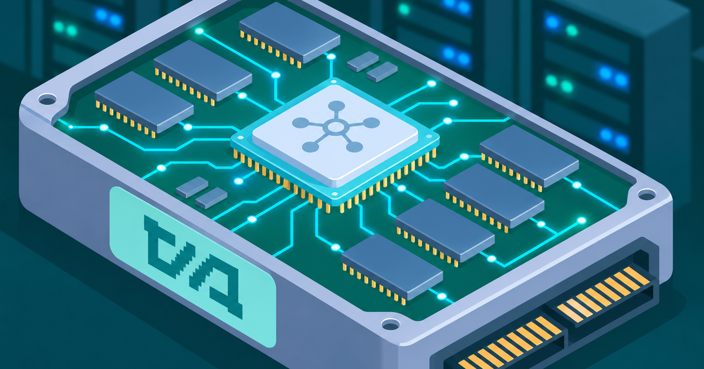

Речь о накопителе в архитектуре «вычислительное хранилище» (computational storage). Внутри — нейросетевой ускоритель производительностью 36 800 DMIPS, 64 ГБ собственной памяти с пропускной способностью 130 ГБ/с и, главное, поддержка привычных ИИ-фреймворков: PyTorch, vLLM, OpenVINO и llama.cpp. По словам Phison, разработчик сможет строить системы на этой базе без специальных инструментов — обычный код, только выполняется он на самом диске.
Серверы сегодня гоняют терабайты данных от накопителей к процессорам и обратно, и это перемещение стало одним из главных узких мест ИИ-инфраструктуры. Новый накопитель обрабатывает часть задач на борту и возвращает хосту только результат, а не весь датасет. В отдельных рабочих нагрузках, по оценке Phison, это сокращает объём передаваемых данных в 10–100 раз и заметно разгружает CPU сервера.
Помимо «ИИ-диска» Phison показала архитектуру Mixed Media: сверхбыстрая pSLC-память и ёмкая QLC-флешка уживаются в одном SSD под управлением 16-канального контроллера, а хост выбирает раздел в зависимости от типа данных. Интерфейс стандартный NVMe, драйверы не нужны. Побочный эффект — надёжность: в системе из 24 дисков потеря одного «съедает» лишь 4% кэша, тогда как при четырёх отдельных кэш-накопителях — сразу 25%.
Phison выпускает контроллеры для каждого пятого проданного в мире SSD, а для дата-центров продвигает линейку Pascari и решение aiDAPTIV для локального обучения и инференса больших моделей. Там же, на SC26, компания представила контроллер PCIe Gen6 (PS5303) с пиковой скоростью до 28 ГБ/с и 6,8 млн операций ввода-вывода в секунду. Всё это — одна программа: убрать бутылочное горлышко перемещения данных вокруг ИИ. Пока это демонстрационные технологии для дата-центров, а не розничный продукт, но идея «думающего накопителя» впервые получила железобетонную, работающую реализацию с открытыми фреймворками.